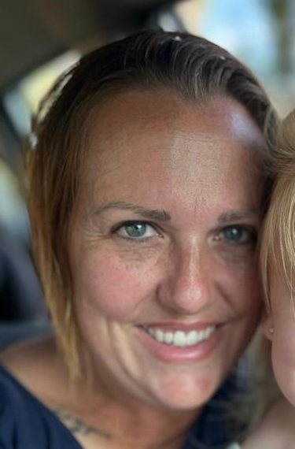

Elmereth Scheepers-White

Contact me
About me
Objective Statement
I am a dynamic and adaptable professional with a strong foundation in
performing arts, beauty, and entrepreneurship. My journey has led me from
the entertainment industry to beauty therapy, and ultimately to business
ownership, where I successfully launched an occupational therapy product
line and a guesthouse in Wonderboom South, Pretoria, South Africa. With a
passion for continuous learning, I am currently expanding my skill set in
web development, embracing technology to enhance both creative and
business pursuits. I thrive in roles that require innovation,
problem-solving, and strategic planning, and I am eager to apply my
diverse expertise in a forward-thinking environment.
Education
Web Development Studies (Ongoing)
- Learning HTML, CSS, JavaScript, and Full-Stack Development.
- Focused on building responsive, user-friendly applications.
Work Experience
Lanescon Plant Hire – Remote (June 2023 – Present)
Roles: Construction Plant Crosshirer, Personal Assistant, Assistant
Manager
- Oversee cross-hiring of construction plant and equipment.
- Manage administrative tasks, scheduling, and communication.
- Assist with business operations, strategy, and client relations.
Kiewiets Creek Guesthouse (Self-Employed) – (November 2023 – Present)
Roles: Founder and co-manager of a successful guesthouse with 3 units in
Wonderboom South .
- Handle bookings, guest relations, and business development.
Skills
- Web Development: HTML, CSS, JavaScript (ongoing studies)
- Microsoft Office: Word, Excel, PowerPoint, Outlook
-
Design & Editing: Basic Adobe Photoshop, Photography & Digital Editing
- Operating Systems: Windows, MacOS, Linux (Basic)
- Online Platforms: Google Workspace, Social Media Management
- Event Planning & Coordination
- Administrative & Managerial Skills
Achievements
-
Successfully opened and operating Kiewiets Creek Guesthouse (Opened
November 2023).
-
Worked as a Production Manager for major theatre and corporate events.
-
Adapting into web development, continuously expanding my knowledge and
technical skills.